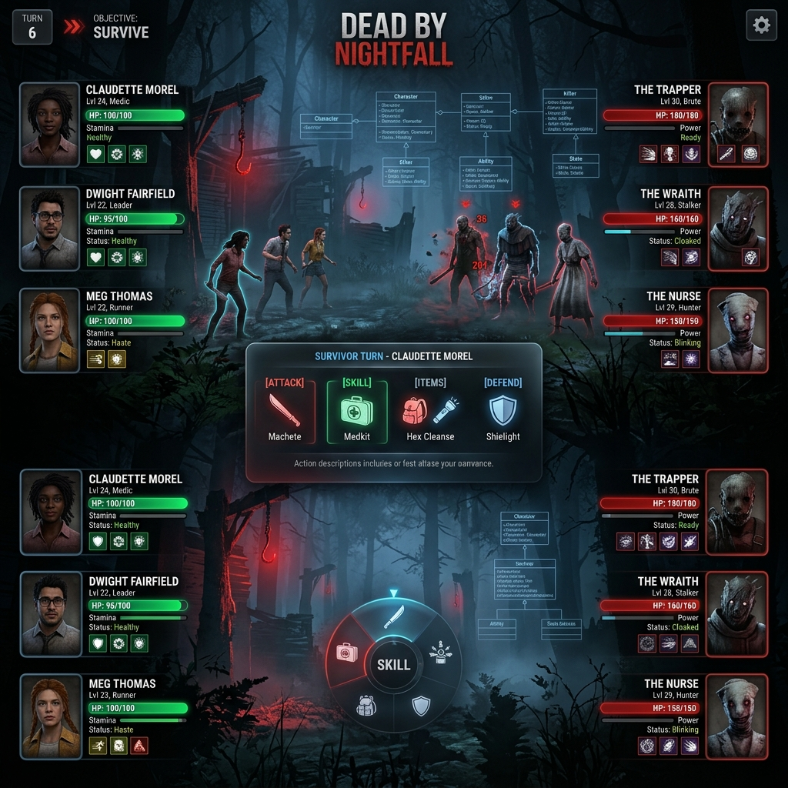

Dead by Daylight 3vs3 RPG
A turn-based 3vs3 RPG combat engine themed around Dead by Daylight, developed as a collaborative intermodular project at Nebrija. Built to showcase clean Object-Oriented Programming (OOP) and design patterns, it features a Java Spring Boot 3.2 REST & WebSockets backend, and an interactive Next.js user interface.
Java (Spring Boot)Next.jsWebSocketsOOP PatternsMariaDB / JDBC